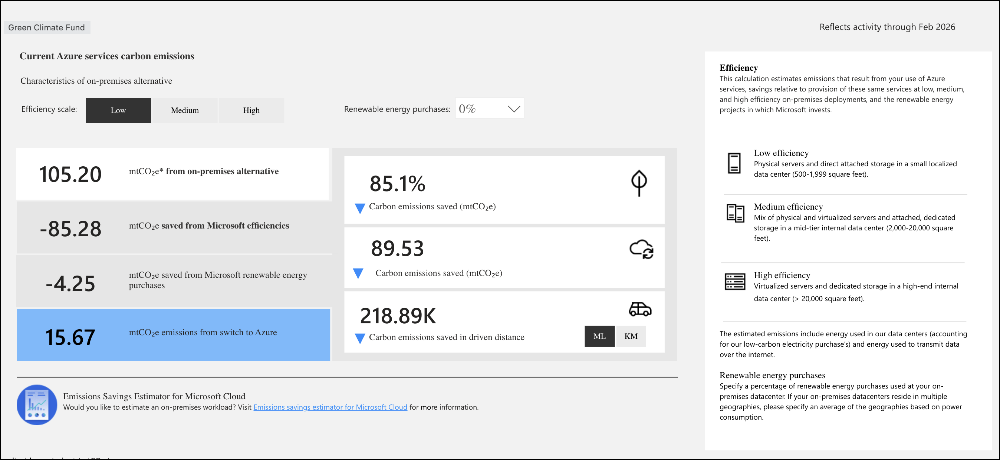
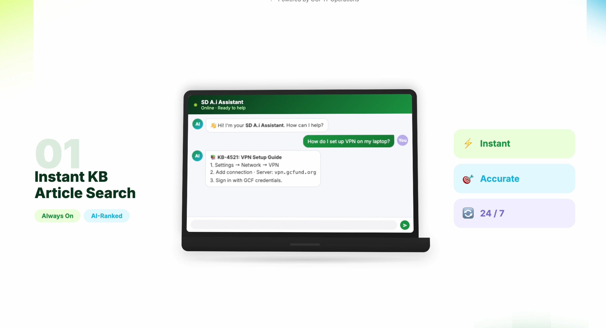
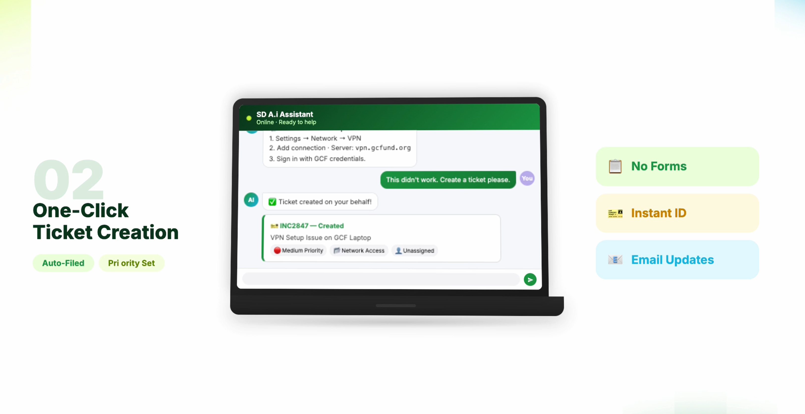
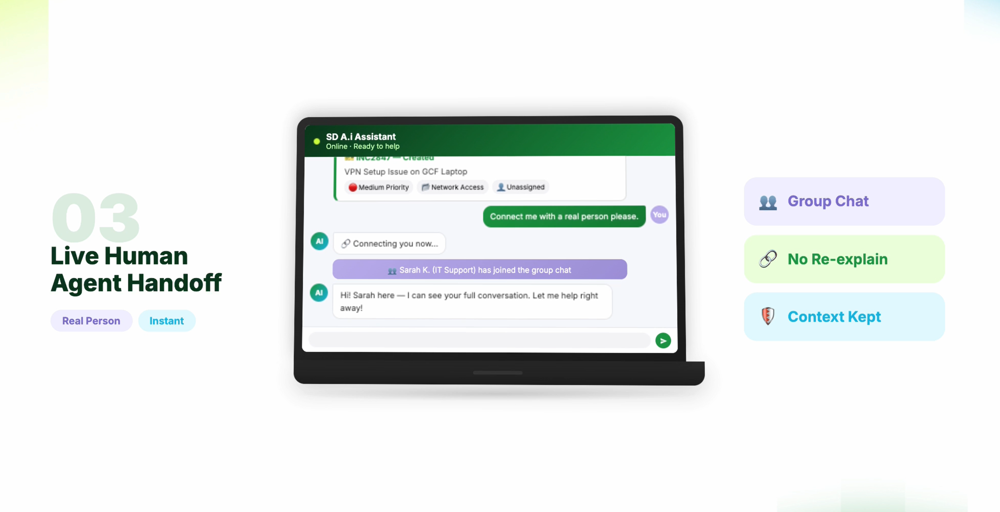
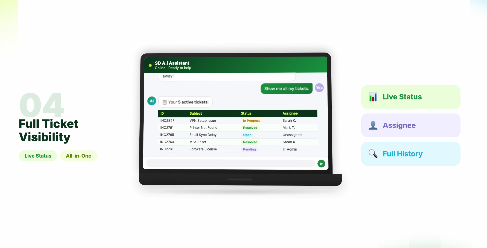
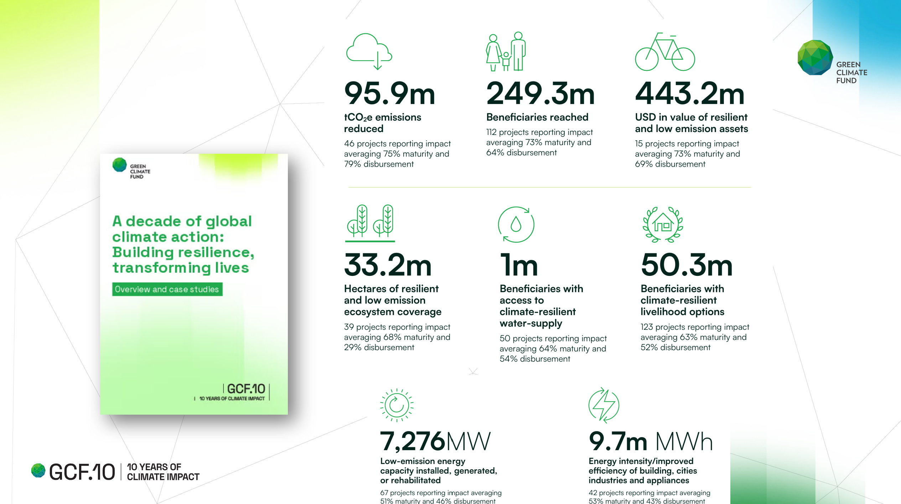
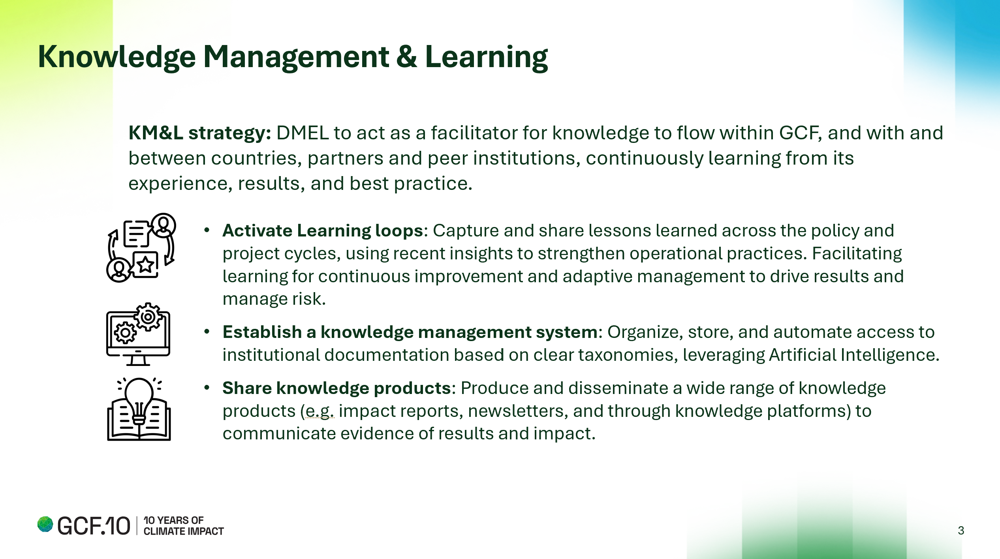
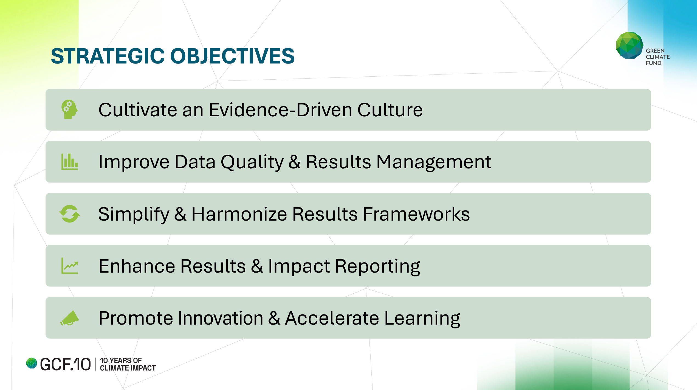
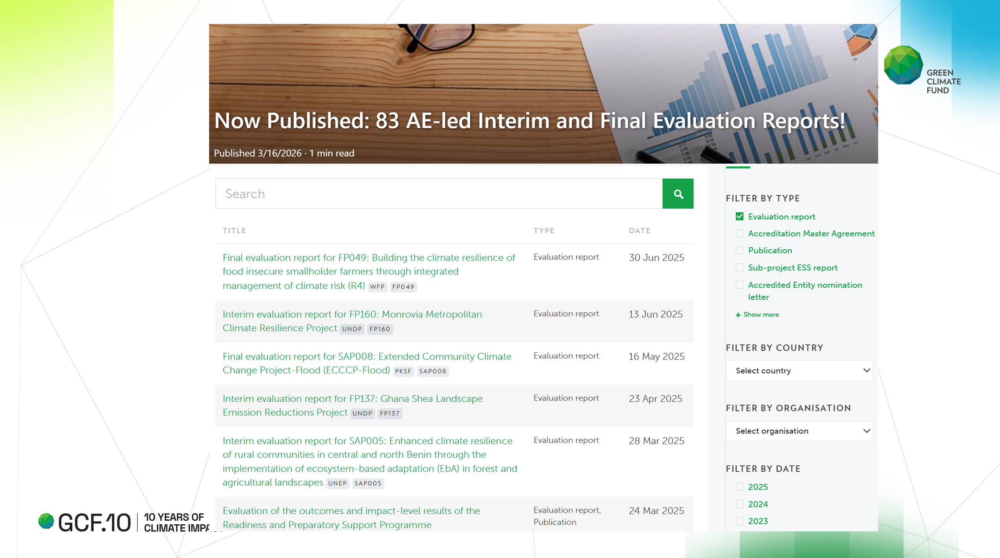
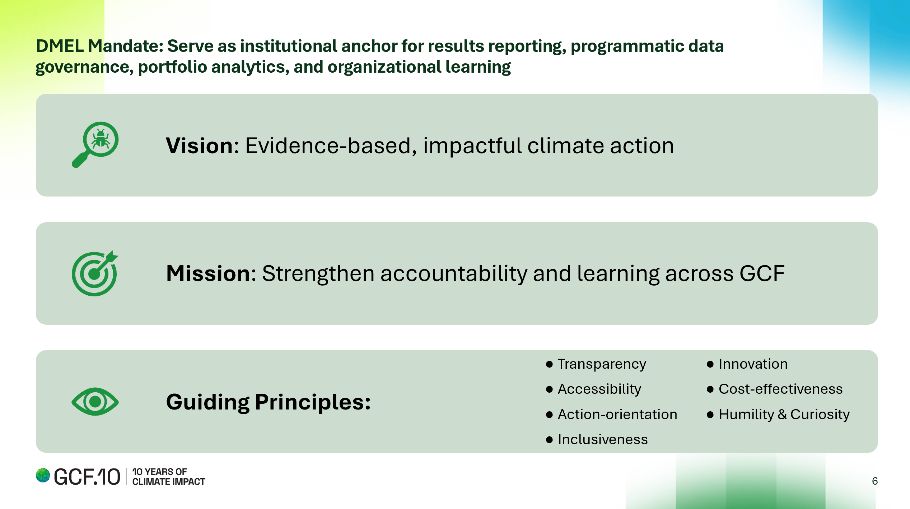

Technology for Efficient and Impactful GCF
The Technology & A.i Exhibition is a curated showcase for the GCF 44th Board that demonstrates how digital platforms, data, and A.i are already being used and can be further leveraged to improve how the Fund operates and delivers impact.
B.44 Exhibition
Showcase of GCF's digital evolution and A.i governance frameworks.
A.i Governance & Regional Enablement
A.i in Service of Climate Finance:
Artificial intelligence is reshaping how international institutions deliver on their mandates. At the Green Climate Fund (GCF), A.i is being introduced deliberately and responsibly to support the Fund's core mission: accelerating climate finance for developing countries with integrity, accountability, and transparency.
GCF's fundamental premise is straightforward: A.i augments what GCF's people do. It does not replace their judgment. Every A.i application at GCF operates with human-in-the-loop oversight, and no A.i system operates autonomously on matters that affect funding decisions, policy, or partner engagement.
GCF's approach to A.i is grounded in a set of working principles for responsible A.i, a formal governance framework under development, and alignment with international guidance including the UN General Assembly resolution on safe, secure, and trustworthy A.i.
For a comprehensive overview of GCF's responsible A.i principles, governance framework, and safeguards, read the full article: Link to Responsible A.i Article
Responsible Usage

Regional Presence
The Green Climate Fund (GCF) is establishing a regional presence to strengthen its ability to deliver impact by being closer to developing country partners and stakeholders, while maintaining strong institutional governance and oversight.
At its forty-first meeting, the GCF Board decided to establish regional offices to increase the efficiency and effectiveness of Secretariat operations, in a manner that is cost-effective, operationally feasible, and aligned with GCF's governing framework.
Service Desk A.i Assistant (Pilot)
To support regional presence through technology, GCF is piloting the ServiceDesk A.i Agent — providing always-available, first-level IT support through a natural language interface, helping staff get quick answers regardless of location or time zone.
All requests are captured and managed through a standardized service management approach. The model combines automation with human oversight: routine queries are resolved quickly, while complex issues are escalated to IT personnel, ensuring accountability where it matters most.




Efficient GCF
A.i Across the Project Lifecycle: GCF manages a project lifecycle that spans ten distinct stages, from country engagement and accreditation through to evaluation and project closure.
Introducing CLIMA: CLIMA — Collaborative Leading Intelligent Multi-purpose Assistant — is the name given to GCF's A.i assistant platform. "Clima" means weather in Spanish and other languages, connecting its tools to GCF's climate mandate.
CLIMA brings together several A.i capabilities under a single, accessible identity, designed to guide GCF's partners through the Fund's processes.
CLIMA A.i Assistant
Conversational guidance across the entire project lifecycle via the GCF Partner Portal — answering questions on accreditation, readiness, concept notes, and funding proposals in real time.
CLIMA Smart Submissions
Partners upload prepared documents and the system extracts relevant data into the appropriate submission fields, reducing duplication and ensuring data consistency across the reporting cycle.
CLIMA Researcher
Generates complementarity and coherence analyses, as well as country context summaries, providing review teams a structured, data-grounded starting point for assessment.
CLIMA A.i-Assisted Appraisal
Automates checklist-based screening at the appraisal stage and flags areas warranting closer attention — ensuring reviewers direct their expertise where it matters most without replacing the review itself.
CLIMA Impact Synthesizer
Captures and surfaces lessons from completed and ongoing projects, turning accumulated institutional knowledge into practical guidance for future proposal teams.
A.i-Assisted Legal Arrangements (Concept)
GCF is exploring whether A.i can generate initial drafts of Funded Activity Agreements, which legal and operational staff would then review and finalize. Any development would proceed within full governance frameworks — no A.i-generated legal document would proceed without thorough human review.
Looking Ahead
GCF is focusing first on areas that deliver immediate operational value — reducing processing time, improving consistency, and giving partners better support. As confidence grows, A.i capabilities will be progressively extended based on demonstrated results.
Summary
- →A.i Accelerates the GCF Mission. Faster, more consistent climate finance delivery.
- →Human-in-the-Loop Governance. Consequential decisions remain with qualified staff.
- →Secure and Responsible Roadmap. Governance precedes deployment at every stage.
- →Lifecycle-Wide Enablement. From screening to evaluation, A.i supports every stage.
Data-Driven Monitoring
Visualizing the real-time impact of GCF investments across the global landscape.

GCF.10 Impact Report
View the full pdf report here




Open Data Library
The Open Data Library consolidates GCF's portfolio data in one accessible platform, and is a useful tool which enables you to efficiently and effectively access real-time portfolio insights and performance metrics.
Digital Innovations
Multilingualism
In line with its regional presence, multilingual and multicultural engagement bears a high significance. Modern technology, including A.i, is recognized as a valuable complement in such an environment, enhancing accessibility and efficiency while supporting established human interpretation practices.
GCF is exploring live translation technology with measured optimism, recognizing that accuracy and contextual nuance are critical in a multilateral setting. The current approach includes internal trials, validation by expert translators, and ongoing engagement with technology vendors including Microsoft.
Technologies featured at the 44th meeting of the GCF Board (B.44), Songdo, Incheon, Republic of Korea, 25–28 March 2026.:
- •Multilingual Presentations: Real-time slide translation into multiple languages without affecting other participants.
- •Multilingual Live Captions: Real-time transcription and translation supporting UN languages, with both A.i-generated and human captioning options.
- •Teams Live Interpreter: Real-time spoken-language interpretation selectable as an audio channel — mirroring speaker voices and traditional conference interpretation.
- •Microsoft Copilot Vision Mode: Natural-language conversation with A.i about shared screen content across documents, presentations, and multiple languages.
The Frontier Firm
Microsoft's 2025 Work Trend Index introduces the concept of the "Frontier Firm" — an organization that deploys A.i agents alongside human workers to address a growing capacity gap, where 80% of employees report insufficient time or energy and 53% of leaders say productivity must increase.
→ 2025: The year the Frontier Firm is born
Environmental Sustainability Report
Microsoft reflects on its progress towards 2030 goals — carbon negative, water positive, and zero waste — while empowering others with technology to build a more sustainable future.
Responsible A.i Transparency Report
Microsoft's annual report outlines how generative A.i systems are built, deployed, and governed responsibly — covering risk management, tooling, and research evolution over time.